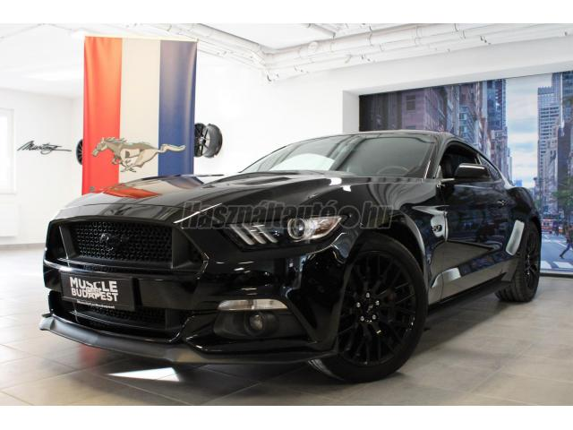

FORD MUSTANG FASTBACK 5.0 V8

Leírás:
Ár:9.900.000 Ft
Évjárat:2016/7
Kivitel:Coupe
Kilométeróra állása: 75 000 km
Teljes tömeg: 2 230 kg
Hengerűrtartalom: 4 951 cm3
Teljesítmény: 308 kW,419 LE
Sebességváltó fajtája: Automata
Bentley